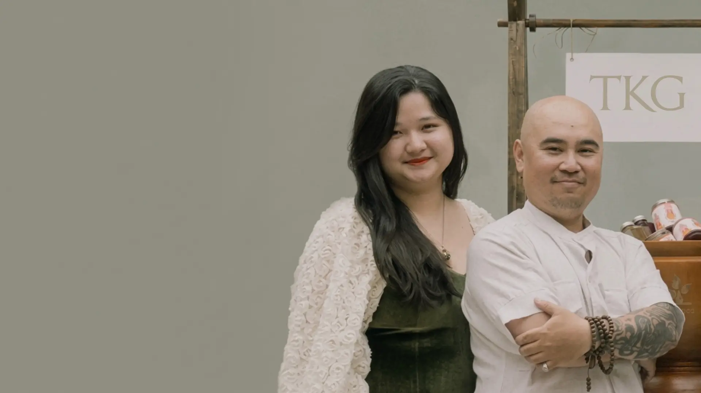
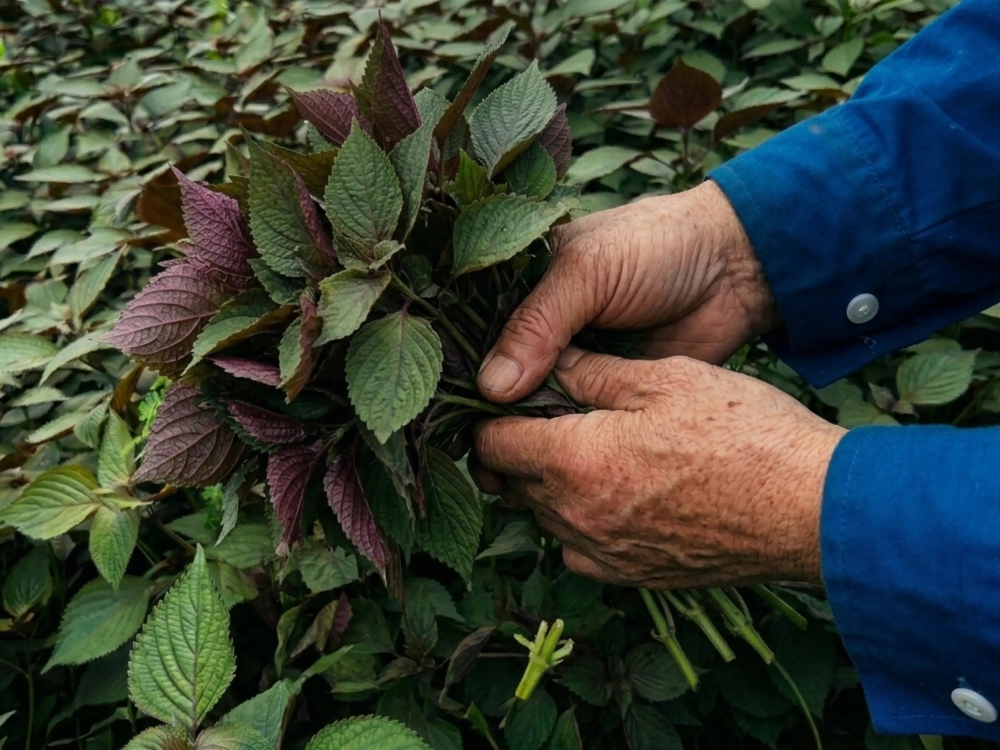
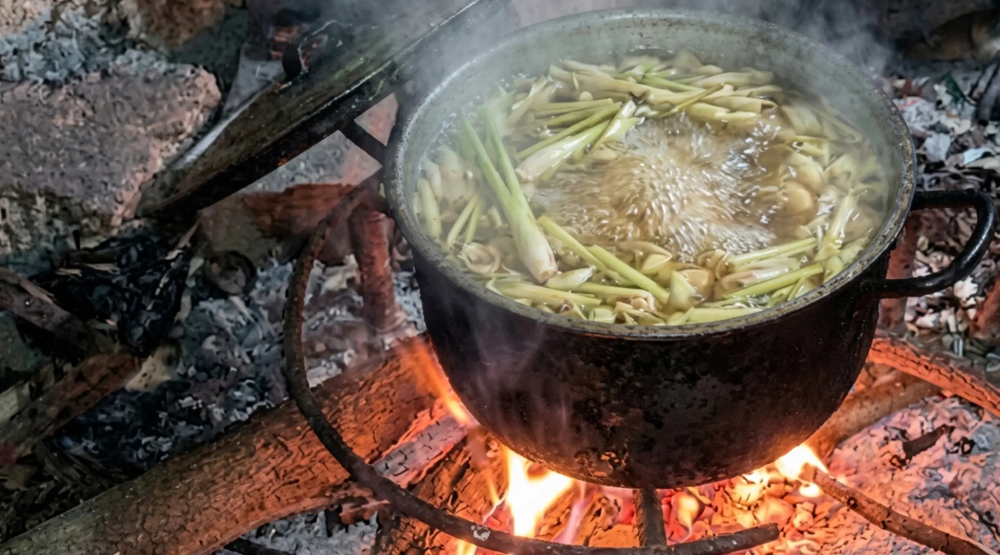
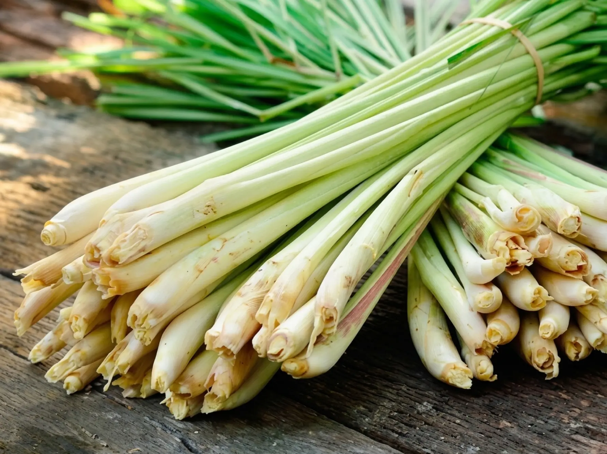
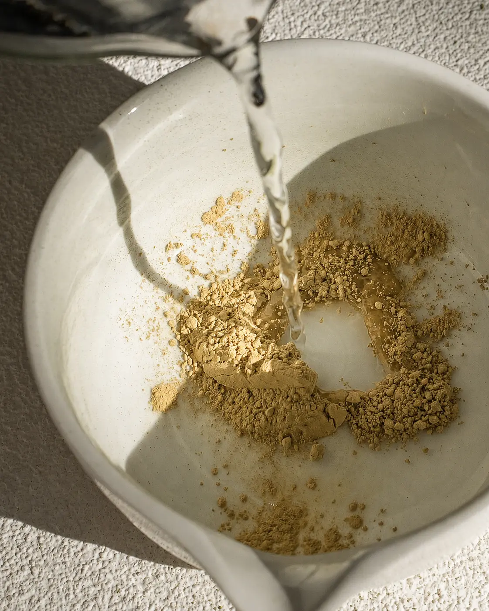

Lá thư từ những người đứng sau TKG
Gửi đến bất kỳ ai đang đọc những dòng này —
Một điều thân thuộc, được nhìn lại. Chúng tôi lớn lên cùng những nguyên liệu này từ rất lâu trước khi nghĩ về việc gầy dựng một công ty. Gừng, sả, tía tô, hay tắc chưa bao giờ hiển hiện trước mắt chúng tôi như những "sản phẩm" hay "giải pháp chăm sóc sức khỏe". Chúng đơn thuần là một phần của cuộc sống thường nhật. Chúng có mặt trong gian bếp, trên mâm cơm gia đình, và trong những cử chỉ quan tâm giản dị chẳng mấy khi cần lời giải thích. Chúng được nấu lên chỉ vì ai đó đang cảm thấy lạnh, vì có khách quý đến nhà, hay đơn giản vì đó là thói quen từ bao đời nay vẫn vậy.
Suốt nhiều năm dài, chúng tôi coi sự thân thuộc ấy là điều hiển nhiên. Phải mãi về sau, chúng tôi mới bắt đầu nhận ra một điều kỳ lạ. Bản thân các nguyên liệu ấy vẫn hiện hữu ở khắp mọi nơi, nhưng tri thức xung quanh cách nấu ủ chúng thì dường như ngày càng khó thấy. Cách chọn lựa nguyên liệu, cách kết hợp chúng với nhau, cách chúng phản ứng với nhiệt độ, nguồn nước và thời gian — những phần thực hành này hiếm khi được luận bàn. Nguyên liệu thì vẫn thân thuộc đó, nhưng quy trình nấu ủ phía sau lại dần trở nên khuất bóng.
TKG được bắt đầu như một nỗ lực để học cách quan tâm sâu sắc hơn.
Không phải để tái định hình thảo mộc Việt. Không phải để hiện đại hóa chúng. Càng không phải để biến đổi chúng thành một thứ gì đó vốn không thuộc về. Thay vào đó, chúng tôi muốn thấu hiểu chúng một cách cẩn trọng hơn, nấu ủ chúng một cách chủ động hơn, và trình bày chúng một cách minh bạch hơn.
Không phải để tái định hình thảo mộc Việt, mà là để nấu ủ và nâng tầm chúng bằng sự tận tâm, bài bản và minh bạch hơn — theo một cách có thể đi xa hơn sự thân thuộc vốn có, nhưng không bao giờ đánh mất cội nguồn nơi chúng sinh ra.
Mọi thứ khác đều được mở ra từ quyết định ấy. Kỷ luật trong Phương pháp Naula. Các công thức nấu ủ. Những trang viết này. Và cả nỗ lực không ngừng nghỉ để ghi chép lại, sẻ chia những gì chúng tôi vẫn đang tiếp tục học hỏi.
Cảm ơn anh/chị đã dành thời gian để đọc những ghi chép của chúng tôi.
Thảo mộc Việt chưa bao giờ là thứ khó tìm. Gừng, sả, tía tô, tắc, và vô vàn nguyên liệu khác vẫn luôn quen thuộc trong mọi nếp nhà, góc chợ, quán ăn và trong đời sống thường nhật. Bản thân nguồn nguyên liệu chưa bao giờ là vấn đề. Điều ngày càng khó thấy chính là quy trình nấu ủ phía sau chúng — kho tàng tri thức tích lũy qua thời gian để định hình nên cách thức người ta chọn lựa, kết hợp, gia nhiệt, hãm nước và bảo toàn nguyên liệu.
Qua thời gian, chúng tôi nhận thấy các cuộc thảo luận về thảo mộc thường chỉ tập trung vào thành phần, công dụng, hoặc thành phẩm, trong khi bản thân quy trình nấu ủ lại nhận được rất ít sự quan tâm. Thế nhưng, nấu ủ mới chính là giai đoạn định hình nên phần lớn đặc tính của một thức nguyên liệu. Nhiệt độ thay đổi hương thơm. Thời gian chuyển hóa hương vị. Nguồn nước định đoạt độ chiết xuất. Những quyết định nhỏ, được lặp đi lặp lại một cách nhất quán, sẽ nhào nặn nên kết quả cuối cùng sâu sắc không kém gì bản thân nguyên liệu.
Đối với chúng tôi, khoảng trống ấy chưa bao giờ là sự thiếu vắng của thảo mộc. Đó là sự thiếu vắng của sự tâm tình và chú ý dành cho cách thức những thảo mộc ấy được nấu ủ. Nguyên liệu thì hiển hiện. Quy trình nấu ủ lại hóa vô hình.
Quan sát đó đã trở thành điểm khởi đầu cho TKG. Nếu quy trình nấu ủ đóng vai trò quan trọng như thế trong việc định hình trải nghiệm cuối cùng, thì nó xứng đáng nhận được sự tận tâm, sự ghi chép bài bản và tính minh bạch tương tự như cách chúng ta vẫn đang dành cho chính nguồn nguyên liệu. Thấu hiểu thảo mộc không chỉ là hiểu chúng là gì, mà còn là hiểu điều gì xảy ra với chúng xuyên suốt quá trình nấu ủ.


Nấu ủ Naula · Sản phẩm Việt Nam
Naula là kỷ luật nấu ủ được áp dụng xuyên suốt trong mọi công thức của TKG.
Được bắt rễ từ thực hành thảo mộc truyền thống của người Việt, Naula là một phương thức tiếp cận có hệ thống trong việc nấu ủ và bảo toàn cỏ cây, trong khi vẫn duy trì tính minh bạch về bản sắc và nguồn gốc của từng nguyên liệu.
Củ gừng phản ứng khác với cây sả. Lá tía tô đáp lại khác với nụ đinh hương. Nhiệt độ, tỷ lệ nước và thời gian nấu ủ tác động đến mỗi nguyên liệu theo những cách khác nhau. Một quy trình có hiệu quả với loại thảo mộc này hoàn toàn có thể làm tổn hại đến loại thảo mộc khác.
Thay vì áp đặt một phương pháp công nghiệp duy nhất lên mọi thành phần, Naula trân trọng từng loại thảo mộc theo đặc tính riêng biệt của chúng.
Mọi quyết định nấu ủ đều được đưa ra cho riêng từng nguyên liệu một.
"Chúng tôi không cố gắng kiểm soát hoàn toàn tự nhiên. Chúng tôi cố gắng bớt can thiệp vào nó và bảo toàn những gì vốn đã luôn ở đó."
Khi quá trình nấu ủ hoàn tất, các thảo mộc sẽ được bảo toàn thông qua công nghệ sấy thăng hoa.
Bằng cách loại bỏ độ ẩm trong môi trường lạnh sâu và chân không thay vì sử dụng nhiệt độ cao, sấy thăng hoa giúp vẹn giữ những đặc tính thường bị suy giảm trong quá trình chế biến thông thường. Hương thơm. Màu sắc. Cấu trúc. Đặc tính nguyên liệu. Tuy nhiên, kỷ luật này không được định nghĩa bởi bản thân việc sấy thăng hoa. Nó được định hình bởi những quyết định được đưa ra trước khi quá trình sấy thăng hoa bắt đầu. Thành quả là một dòng Botanical Blend Powder vẫn giữ vẹn nguyên sợi dây kết nối với nguồn nguyên liệu khởi sinh ra nó.
Cặn lắng tự nhiên có thể xuất hiện sau khi khuấy. Màu sắc có thể dịch chuyển. Sự thay đổi theo mùa có thể nhận thấy rõ từ vụ thu hoạch này sang vụ thu hoạch khác. Đây không phải là những lỗi cần phải sửa chữa. Chúng là minh chứng cho thấy thảo mộc đích thực vẫn luôn hiện hữu ở đó.
Đối với chúng tôi, nấu ủ không phải là khiến cho mọi nguyên liệu đều phản ứng giống nhau. Đó là sự thấu hiểu những khác biệt giữa chúng — và bảo tồn những khác biệt ấy bằng tất cả sự tận tâm.

Chúng tôi tin rằng nguyên liệu cần phải được nhận diện một cách rõ ràng. Không bị giản lược vào các danh mục chung chung. Không bị ẩn giấu đằng sau những mô tả mơ hồ. Không bị tách rời khỏi bản sắc vốn có của chúng.
Tại TKG, mọi nguyên liệu đều được gọi tên. Đó không phải một chiến lược tiếp thị, mà là một lời cam kết. Khi bạn hòa tan một phần Morning Ember hay Still Ember, bạn biết chính xác mình đang uống những gì, bởi điều đó hiển thị tường minh trên nhãn mác, và bởi không có bất kỳ thứ gì khác được thêm vào để làm lu mờ nó: Củ gừng, Nhánh sả, Chanh, Lá tía tô, Nụ đinh hương, Tắc.
Chúng tôi kiểm nghiệm sản phẩm qua Quatest 3. Chúng tôi không sử dụng phẩm màu nhân tạo hay chất bảo quản. Chúng tôi giữ cho các công thức luôn tập trung và dễ hiểu, chỉ bao gồm những nguyên liệu đóng vai trò rõ ràng trong quy trình nấu ủ. Sự minh bạch được bắt đầu từ việc định danh chính xác những gì hiện hữu. Mọi thứ khác đều được mở ra từ đó.

Bột sấy thăng hoa · Sản phẩm Việt Nam
"Cùng một kỷ luật nơi gian bếp,
vẹn nguyên trong mỗi ly nước."